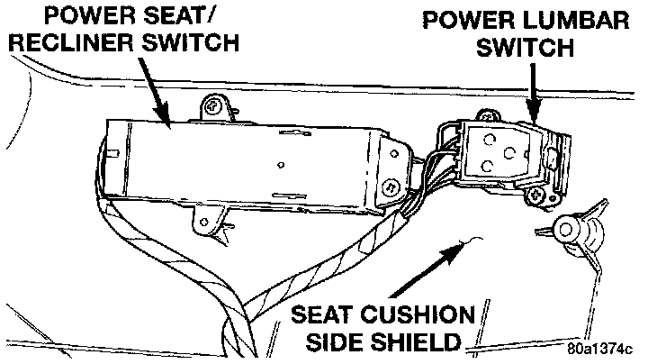

Power Lumbar Switch
REMOVALPower Seat Switches Remove/Install:

1. Disconnect and isolate the battery negative cable.
2. Remove the three screws that secure the seat cushion side shield to the seat cushion frame.
3. Pull the side shield away from the seat cushion far enough to unplug the switch wire harness connector.
4. Remove the two screws that secure the switch to the inside of the side shield.
5. Remove the switch from the side shield.
6. Reverse the removal procedures to install.